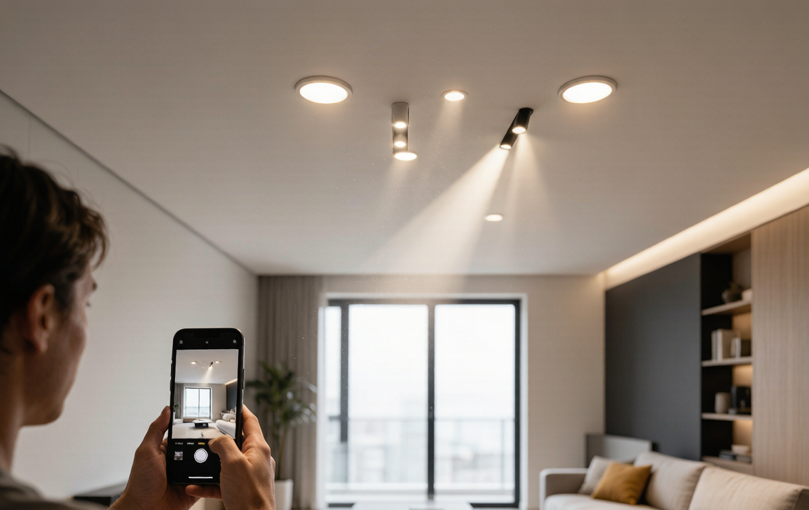
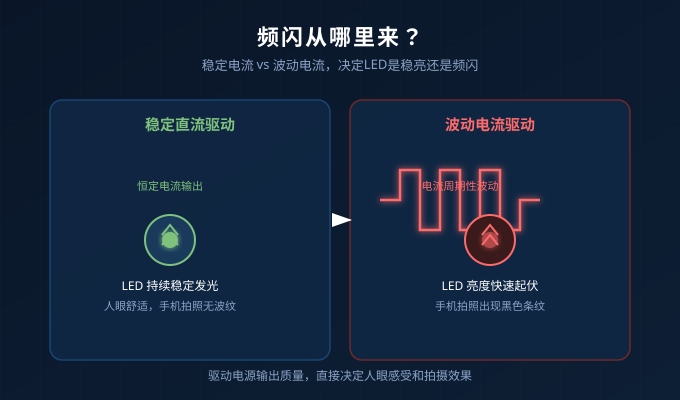
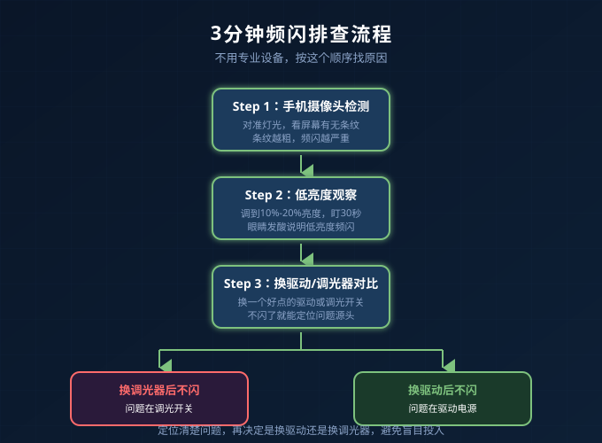

你有没有遇到这种情况？
新装的智能射灯，白天看没问题，晚上调暗一点，手机一拍照片，满屏都是黑色条纹。或者坐在客厅看书，半小时后眼睛发酸、太阳穴发胀。
很多人第一反应是灯买差了。其实百分之七十的频闪问题，根源不在灯具，而在驱动电源和调光器不匹配。
作为在LED驱动行业摸爬滚打多年的人，我见过太多这种案例：客户花大价钱买了高端灯，结果配了一个廉价可控硅调光器，频闪直接拉满。今天这篇文章，就用最直白的方式，讲清楚频闪从哪来、怎么快速自查、以及驱动该怎么选。
一、频闪到底是什么？
简单说，频闪就是灯光亮度在快速波动。人眼一般看不出来，但手机摄像头、视觉神经和大脑皮层都能感知到。

LED本身不会频闪，它是直流发光的固态光源。真正的频闪，来自驱动电源输出电流的周期性波动。当调光器向驱动发送的切相信号、PWM信号或模拟信号不稳定时，驱动无法输出稳定电流，灯就会闪。
常见三种翻车组合：
| 调光方式 | 典型问题 | 常见场景 |
|---|---|---|
| 可控硅调光 | 低端调光器切相不干脆，电流断续 | 旧房改造、普通墙面调光开关 |
| PWM调光 | 频率低于3kHz时频闪明显 | 廉价智能灯带、低端控制器 |
| 0-10V调光 | 驱动与调光器曲线不匹配，低亮度闪烁 | 商业照明、工程改造 |
二、3分钟自查：你的灯到底有没有频闪？
不用专业设备，日常三招就能判断。
1. 手机摄像头法
打开手机相机，切换到专业模式或慢动作视频，对准灯光。如果屏幕上出现明显条纹或水波纹，说明存在低频频闪。条纹越粗、移动越慢，频闪越严重。
注意：部分手机会自动消除频闪显示，建议用另一部手机或平板辅助确认。
2. 低亮度观察法
把灯调到10%-20%亮度，盯着看30秒。如果感觉眼睛发酸、头晕，或者视野边缘有“抖动感”，说明调光深度下频闪超标。
3. 换驱动对比法
如果同一盏灯换个驱动或换个调光开关就不闪了，那基本可以肯定：是驱动和调光器不匹配。

三、驱动选型：避开频闪的4个硬指标
1. 调光方式必须配对
- 家里是可控硅调光开关，就选可控硅调光驱动。
- 做了0-10V线路，就选0-10V调光驱动。
- 智能家居系统用涂鸦Zigbee或DALI，就选对应协议的驱动。
最忌讳的是“协议混用”。比如把普通0-10V驱动接到可控硅调光器上，基本都会闪。
2. 调光深度要够
很多驱动标称“1%-100%调光”，实际到15%以下就开始不稳。选购时要看最低稳定亮度和调光曲线，而不是只看百分比数字。
3. PWM频率要高
如果驱动内部采用PWM调光，频率建议在3kHz以上。频率越高，手机拍照越不容易出现波纹，眼睛也越舒服。
4. 认准有过认证的电源
3C认证、CE认证不仅是合规问题，也代表电源在电磁兼容、谐波、安全距离等方面经过了测试。杂牌驱动为了省成本，往往在这些地方偷工减料。
四、已经装好了，怎么补救？
如果已经装修完，不想大动干戈，可以按这个顺序尝试：
- 先换调光开关：可控硅调光器质量参差不齐，换一个好点的品牌调光器，往往立竿见影。
- 再换驱动电源：如果调光器没问题，就换一盏灯的驱动试试，确认是驱动问题再批量换。
- 检查线路：零火是否接反、线路是否有接头松动，也会导致电流不稳。
- 降低调光深度：有些灯调到太低亮度本来就会闪，日常使用保留在20%以上。
常见问题
Q: 手机拍照有条纹，但眼睛没感觉，需要处理吗？
A: 建议处理。低频频闪即使肉眼不可见，长时间暴露也可能导致视觉疲劳和注意力下降，尤其是有小孩或老人的家庭。
Q: 智能灯用Zigbee控制，还会出现频闪吗？
A: 会。Zigbee只负责发指令，最终调光质量还是取决于驱动本身。选驱动时要确认它支持的调光协议和频率参数。
Q: 为什么同样的灯，在邻居家不闪，在我家就闪？
A: 大概率是调光器或电网环境不同。不同品牌的调光器切相特性不一样，电网中的谐波、浪涌也会影响驱动输出。
总结
- 频闪不是灯的问题，是驱动和调光系统的问题。
- 手机摄像头、低亮度观察、换驱动对比，三招就能快速自查。
- 驱动选型核心看：协议匹配、调光深度、PWM频率、认证资质。
- 已装好的系统，优先换调光开关，再换驱动，最后查线路。
如果你正在做智能家居照明改造，或者工程项目里遇到调光频闪难题，欢迎联系耐利普科技工程团队：138-2549-6855，我们可以根据你的调光器和灯具组合，给出匹配的驱动方案。